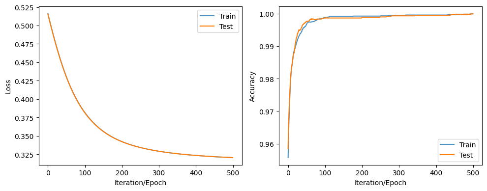

Code
import torch
import numpy as np, os, sys, requests, pandas as pd, zipfile as zf
import matplotlib.pyplot as plt
print(f'Kernel used is: {os.path.basename(sys.executable.replace("/bin/python",""))}')Kernel used is: dl-toolsTo practice my deep learning chops/model-writing skills, I pick a toy dataset. Here I aim to predict swarm behaviour.
import torch
import numpy as np, os, sys, requests, pandas as pd, zipfile as zf
import matplotlib.pyplot as plt
print(f'Kernel used is: {os.path.basename(sys.executable.replace("/bin/python",""))}')Kernel used is: dl-toolsprint(f'Pytorch version is {torch.__version__}')Pytorch version is 2.0.1+cu117torch.cuda.is_available(), torch.cuda.current_device(), torch.cuda.device_count(), torch.cuda.get_device_name(0)(True, 0, 1, 'Quadro P1000')# setting device on GPU if available, else CPU
device = torch.device('cuda' if torch.cuda.is_available() else 'cpu')
print('Using device:', device)
print()
#Additional Info when using cuda
if device.type == 'cuda':
print(torch.cuda.get_device_name(0))
print('Memory Usage:')
print('Allocated:', round(torch.cuda.memory_allocated(0)/1024**3,1), 'GB')
print('Cached: ', round(torch.cuda.memory_reserved(0)/1024**3,1), 'GB')Using device: cuda
Quadro P1000
Memory Usage:
Allocated: 0.0 GB
Cached: 0.0 GB# os.chdir("/home/temi/Files/learning_stuff/pytorch_implementations/swarm behaviour/scripts")
# os.getcwd()data_link = 'https://archive.ics.uci.edu/ml/machine-learning-databases/00524/Swarm%20Behavior%20Data.zip'data_dir = '/home/temi/Files/learning_stuff/pytorch_implementations/swarm behaviour'if not 'data' in os.listdir(data_dir):
os.mkdir('/home/temi/Projects/swarm_behaviour/data/')
else:
print('data directory already exists.')data directory already exists.def download_url(url, save_path, chunk_size=128):
r = requests.get(url, stream=True)
with open(save_path, 'wb') as fd:
for chunk in r.iter_content(chunk_size=chunk_size):
fd.write(chunk)data_path = os.path.join(data_dir, 'data', 'swarm_behaviour.zip')
if not 'swarm_behaviour.zip' in os.listdir(os.path.join(data_dir, 'data')):
print('Downloading...')
download_url(data_link, )
print('Done.')
else:
print('File already present.')File already present.with zf.ZipFile(data_path, 'r') as obj:
name_of_files = obj.namelist()[1:]
name_of_files['Swarm Behavior Data/Aligned.csv',
'Swarm Behavior Data/Flocking.csv',
'Swarm Behavior Data/Grouped.csv']# read in each file into a dictionary
keys = ['aligned', 'flocking', 'grouped']
swarm_data = dict()
for i, file_name in enumerate(name_of_files):
zipfile = zf.ZipFile(data_path)
swarm_data[keys[i]] = pd.read_csv(zipfile.open(file_name))
zipfile.close()/tmp/ipykernel_184041/1264924189.py:6: DtypeWarning: Columns (0) have mixed types. Specify dtype option on import or set low_memory=False.
swarm_data[keys[i]] = pd.read_csv(zipfile.open(file_name))swarm_data['aligned'].iloc[0:5,:]| x1 | y1 | xVel1 | yVel1 | xA1 | yA1 | xS1 | yS1 | xC1 | yC1 | ... | yVel200 | xA200 | yA200 | xS200 | yS200 | xC200 | yC200 | nAC200 | nS200 | Class | |
|---|---|---|---|---|---|---|---|---|---|---|---|---|---|---|---|---|---|---|---|---|---|
| 0 | -1414.14 | -535.22 | -17.88 | -7.23 | 0.00 | 0.0 | 0.00 | 0.00 | 0.00 | 0.00 | ... | -16.85 | 0.0 | 0.00 | 0.0 | 0.0 | 0.00 | 0.00 | 29 | 0 | 0 |
| 1 | -1412.93 | 597.54 | -13.55 | -5.48 | 0.00 | 0.0 | 0.00 | 0.00 | 0.00 | 0.00 | ... | -12.09 | 0.0 | 0.00 | 0.0 | 0.0 | 0.00 | 0.00 | 44 | 0 | 0 |
| 2 | -1407.38 | 70.72 | -14.37 | -5.81 | 0.00 | 0.0 | 0.00 | 0.00 | 0.00 | 0.00 | ... | -16.20 | 0.0 | 0.00 | 0.0 | 0.0 | 0.00 | 0.00 | 40 | 0 | 0 |
| 3 | -1407.00 | -759.80 | -7.59 | -1.27 | -0.98 | -0.2 | 0.00 | 0.00 | 0.91 | 0.41 | ... | 2.99 | -1.0 | -0.07 | 0.0 | 0.0 | -0.52 | 0.86 | 3 | 0 | 1 |
| 4 | -1406.36 | 698.39 | -16.54 | -6.95 | -1.00 | 0.0 | -944.07 | -396.62 | 0.00 | 0.00 | ... | -12.61 | 0.0 | -1.00 | 0.0 | 0.0 | 0.00 | 0.00 | 13 | 0 | 0 |
5 rows × 2401 columns
swarm_data['flocking'].iloc[0:5,0:]| x1 | y1 | xVel1 | yVel1 | xA1 | yA1 | xS1 | yS1 | xC1 | yC1 | ... | yVel200 | xA200 | yA200 | xS200 | yS200 | xC200 | yC200 | nAC200 | nS200 | Class | |
|---|---|---|---|---|---|---|---|---|---|---|---|---|---|---|---|---|---|---|---|---|---|
| 0 | -1414.14 | -535.22 | -17.88 | -7.23 | 0.00 | 0.0 | 0.00 | 0.00 | 0.00 | 0.00 | ... | -16.85 | 0.0 | 0.00 | 0.0 | 0.0 | 0.00 | 0.00 | 29 | 0 | 0 |
| 1 | -1412.93 | 597.54 | -13.55 | -5.48 | 0.00 | 0.0 | 0.00 | 0.00 | 0.00 | 0.00 | ... | -12.09 | 0.0 | 0.00 | 0.0 | 0.0 | 0.00 | 0.00 | 44 | 0 | 0 |
| 2 | -1407.38 | 70.72 | -14.37 | -5.81 | 0.00 | 0.0 | 0.00 | 0.00 | 0.00 | 0.00 | ... | -16.20 | 0.0 | 0.00 | 0.0 | 0.0 | 0.00 | 0.00 | 40 | 0 | 0 |
| 3 | -1407.0 | -759.80 | -7.59 | -1.27 | -0.98 | -0.2 | 0.00 | 0.00 | 0.91 | 0.41 | ... | 2.99 | -1.0 | -0.07 | 0.0 | 0.0 | -0.52 | 0.86 | 3 | 0 | 1 |
| 4 | -1406.36 | 698.39 | -16.54 | -6.95 | -1.00 | 0.0 | -944.07 | -396.62 | 0.00 | 0.00 | ... | -12.61 | 0.0 | -1.00 | 0.0 | 0.0 | 0.00 | 0.00 | 13 | 0 | 0 |
5 rows × 2401 columns
swarm_data['grouped'].iloc[0:5,:]| x1 | y1 | xVel1 | yVel1 | xA1 | yA1 | xS1 | yS1 | xC1 | yC1 | ... | yVel200 | xA200 | yA200 | xS200 | yS200 | xC200 | yC200 | nAC200 | nS200 | Class | |
|---|---|---|---|---|---|---|---|---|---|---|---|---|---|---|---|---|---|---|---|---|---|
| 0 | -1414.14 | -535.22 | -17.88 | -7.23 | 0.00 | 0.0 | 0.00 | 0.00 | 0.00 | 0.00 | ... | -16.85 | 0.0 | 0.00 | 0.0 | 0.0 | 0.00 | 0.00 | 29 | 0 | 0 |
| 1 | -1412.93 | 597.54 | -13.55 | -5.48 | 0.00 | 0.0 | 0.00 | 0.00 | 0.00 | 0.00 | ... | -12.09 | 0.0 | 0.00 | 0.0 | 0.0 | 0.00 | 0.00 | 44 | 0 | 0 |
| 2 | -1407.38 | 70.72 | -14.37 | -5.81 | 0.00 | 0.0 | 0.00 | 0.00 | 0.00 | 0.00 | ... | -16.20 | 0.0 | 0.00 | 0.0 | 0.0 | 0.00 | 0.00 | 40 | 0 | 0 |
| 3 | -1407.00 | -759.80 | -7.59 | -1.27 | -0.98 | -0.2 | 0.00 | 0.00 | 0.91 | 0.41 | ... | 2.99 | -1.0 | -0.07 | 0.0 | 0.0 | -0.52 | 0.86 | 3 | 0 | 1 |
| 4 | -1406.36 | 698.39 | -16.54 | -6.95 | -1.00 | 0.0 | -944.07 | -396.62 | 0.00 | 0.00 | ... | -12.61 | 0.0 | -1.00 | 0.0 | 0.0 | 0.00 | 0.00 | 13 | 0 | 0 |
5 rows × 2401 columns
def split_into_train_val_test(df, tr_frac=0.5, rem_frac=0.5, seed=1, where_target='last',
return_what='dict'):
# shuffle the dataframe
df = df.sample(frac=1, random_state=seed)
if where_target=='last':
df_preds = df.iloc[:, :-1]
df_targets = df.iloc[:, -1]
# split into training and testing
# 0.7, 0.3
split_one = int(df_preds.shape[0] * tr_frac)
df_preds_train = df_preds[:split_one]
df_targets_train = df_targets[:split_one]
remaining_preds, remaining_targets = df_preds[split_one:], df_targets[split_one:]
split_two = int(remaining_preds.shape[0]*rem_frac)
df_preds_val = remaining_preds[:split_two]
df_preds_test = remaining_preds[split_two:]
df_targets_val = remaining_targets[:split_two]
df_targets_test = remaining_targets[split_two:]
print(df_preds_train.shape, df_targets_train.shape)
print(df_preds_val.shape, df_targets_val.shape)
print(df_preds_test.shape, df_targets_test.shape)
if return_what=='dict':
return {'train': (df_preds_train.to_numpy(), df_targets_train.to_numpy()),
'validate': (df_preds_val.to_numpy(), df_targets_val.to_numpy()),
'test': (df_preds_test.to_numpy(), df_targets_test.to_numpy())}
elif return_what=='tuple':
return ((df_preds_train.to_numpy(), df_targets_train.to_numpy()),
(df_preds_val.to_numpy(), df_targets_val.to_numpy()),
(df_preds_test.to_numpy(), df_targets_test.to_numpy()))Normalize the data
# standardizing the data
mean_ = swarm_data['aligned'].iloc[:, :-1].mean(axis=0)
std_ = swarm_data['aligned'].iloc[:, :-1].std(axis=0)
swarm_data['aligned'].iloc[:, :-1] = (swarm_data['aligned'].iloc[:, :-1] - mean_)/std_Split the data
data_split = split_into_train_val_test(df=swarm_data['aligned'], return_what='tuple')
X_train, y_train = data_split[0]
X_test, y_test = data_split[1]
X_valid, y_valid = data_split[2]
#
X_train = torch.tensor(X_train, dtype=torch.float64).to(device)
y_train = torch.tensor(y_train).type(torch.LongTensor).to(device)
X_test = torch.tensor(X_test, dtype=torch.float64).to(device)
y_test = torch.tensor(y_test).type(torch.LongTensor).to(device)(12008, 2400) (12008,)
(6004, 2400) (6004,)
(6004, 2400) (6004,)X_train.is_cudaTrueclass SwarmNN(torch.nn.Module):
'''
'''
def __init__(self, in_dim, out_dim, hidden_dims=[], use_bias=True):
'''
Constructs a multilayer perceptron
'''
super(SwarmNN, self).__init__()
self.in_dim = in_dim
self.out_dim = out_dim
# assuming we don't have any hidden layer, this will just implement a linear model
if len(hidden_dims) == 0:
layers = [torch.nn.Linear(in_dim, out_dim, bias=use_bias)]
else:
layers = [torch.nn.Linear(in_dim, hidden_dims[0], bias=use_bias), torch.nn.ReLU()]
for i, hidden_dim in enumerate(hidden_dims[:-1]):
layers += [torch.nn.Linear(hidden_dim, hidden_dims[i+1], bias=use_bias), torch.nn.ReLU()]
layers += [torch.nn.Linear(hidden_dims[-1], out_dim, bias=use_bias)]
self.main = torch.nn.Sequential(*layers)
def forward(self, x):
hidden_output = self.main(x)
output = torch.nn.functional.softmax(hidden_output, dim=1)
#output = output.argmax(dim=1)
return outputmodel = SwarmNN(in_dim=X_train.shape[1], out_dim=2, hidden_dims=[500, 100]).to(device)
modelSwarmNN(
(main): Sequential(
(0): Linear(in_features=2400, out_features=500, bias=True)
(1): ReLU()
(2): Linear(in_features=500, out_features=100, bias=True)
(3): ReLU()
(4): Linear(in_features=100, out_features=2, bias=True)
)
)for param in model.parameters():
print(param.shape)torch.Size([500, 2400])
torch.Size([500])
torch.Size([100, 500])
torch.Size([100])
torch.Size([2, 100])
torch.Size([2])# trainloader = torch.utils.data.DataLoader((X_train, y_train), batch_size=32, shuffle=True)
# testloader = torch.utils.data.DataLoader((X_test, y_test), batch_size=32, shuffle=False)lr = 0.001
optimizer = torch.optim.SGD(model.parameters(), lr=lr)
loss_fxn = torch.nn.CrossEntropyLoss()num_epochs = 500
loss_tally = []
acc_tally = []
metrics = {}
# for the test set
test_loss = []
test_acc = []
for epoch in range(0, num_epochs):
model.train()
optimizer.zero_grad()
predictions = model(X_train.float()).to(device)
loss = loss_fxn(predictions, y_train)
acc = torch.mean(1.0 * (predictions.argmax(dim=1) == y_train))
loss.backward()
optimizer.step()
#running_loss += loss.item()
#loss_tally.append(running_loss)
loss_tally.append(loss.cpu().item())
acc_tally.append(acc.cpu().item())
# on the test set
with torch.no_grad():
model.eval()
test_pred = model(X_test.float())
test_l = loss_fxn(test_pred, y_test).item()
#print(f'Test loss {epoch}: {test_l}')
test_loss.append(test_l)
test_acc.append(torch.mean(1.0 * (test_pred.argmax(dim=1) == y_test)).item())
metrics['train_loss'] = loss_tally
metrics['train_accuracy'] = acc_tally
metrics['test_loss'] = test_loss
metrics['test_accuracy'] = test_acctest_loss[-20:], loss_tally[-20:]([0.32089731097221375,
0.3208724856376648,
0.3208479583263397,
0.32082340121269226,
0.3207990229129791,
0.3207748234272003,
0.32075071334838867,
0.3207266926765442,
0.32070282101631165,
0.32067909836769104,
0.3206555247306824,
0.3206319808959961,
0.32060864567756653,
0.3205854296684265,
0.32056230306625366,
0.320539265871048,
0.3205163776874542,
0.32049357891082764,
0.32047098875045776,
0.32044848799705505],
[0.3208702802658081,
0.32084545493125916,
0.3208208382129669,
0.32079631090164185,
0.3207719027996063,
0.3207475543022156,
0.3207234740257263,
0.320699542760849,
0.3206755518913269,
0.3206517994403839,
0.32062822580337524,
0.3206046521663666,
0.320581316947937,
0.32055801153182983,
0.3205348551273346,
0.3205118775367737,
0.32048892974853516,
0.32046613097190857,
0.3204434812068939,
0.32042089104652405])plt.plot(metrics['test_loss'])
plt.plot(metrics['train_loss'])
def plot_my_training(metrics):
fig, ax = plt.subplots(1, 2, figsize=(10, 4))
ax[0].plot(range(len(metrics['train_loss'])), metrics['train_loss'],
alpha=0.8, label='Train')
ax[0].plot(range(len(metrics['test_loss'])), metrics['test_loss'], label='Test')
ax[0].set_xlabel('Iteration/Epoch')
ax[0].set_ylabel('Loss')
ax[0].legend()
ax[1].plot(range(len(metrics['train_accuracy'])), metrics['train_accuracy'],
alpha=0.8, label='Train')
ax[1].plot(range(len(metrics['test_accuracy'])), metrics['test_accuracy'], label='Test')
ax[1].set_xlabel('Iteration/Epoch')
ax[1].set_ylabel('Accuracy')
ax[1].legend()
plt.tight_layout()
plt.show()plot_my_training(metrics)